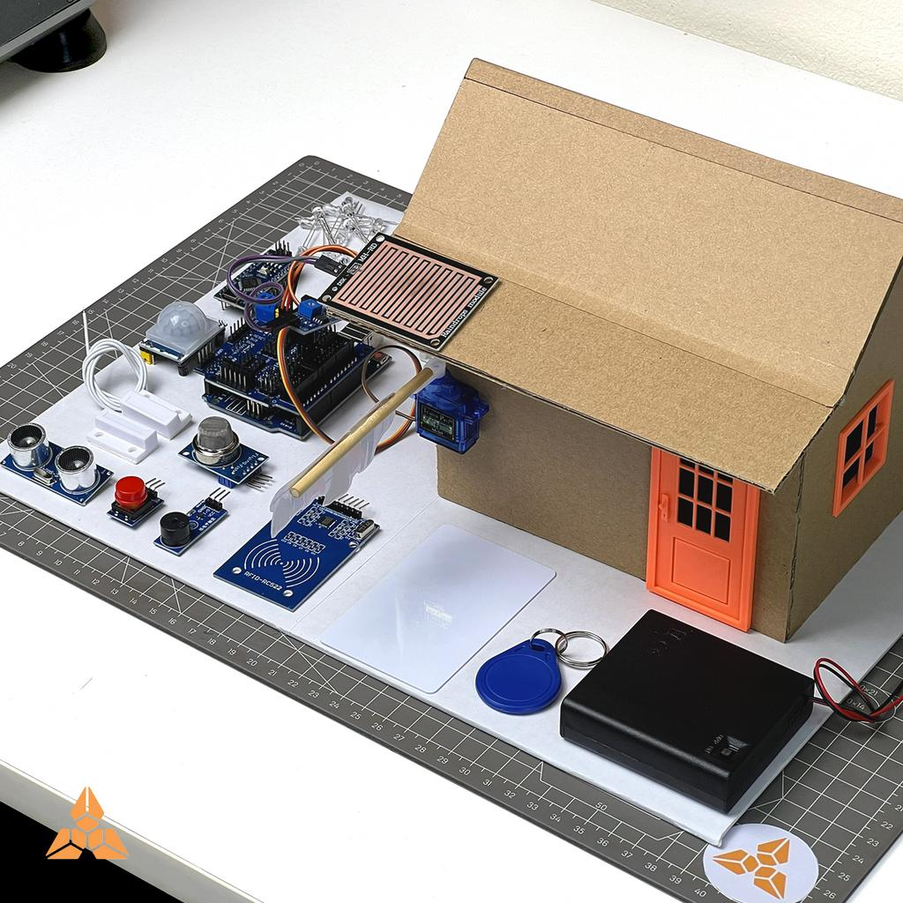
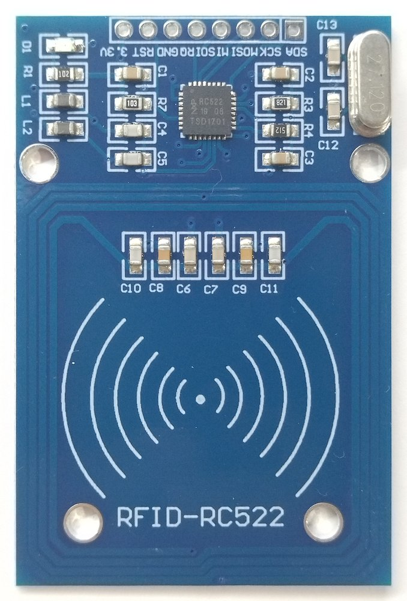
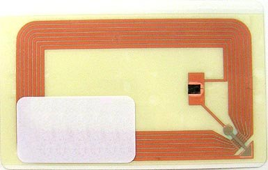
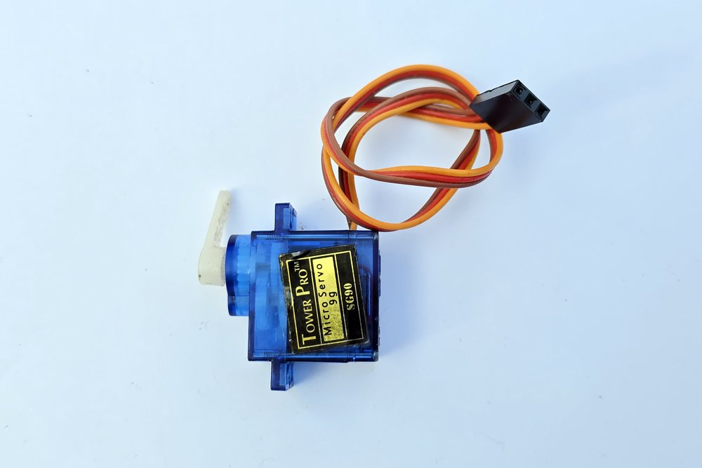
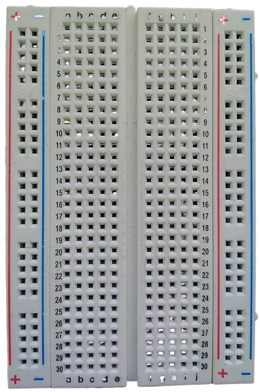
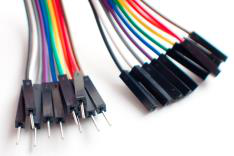
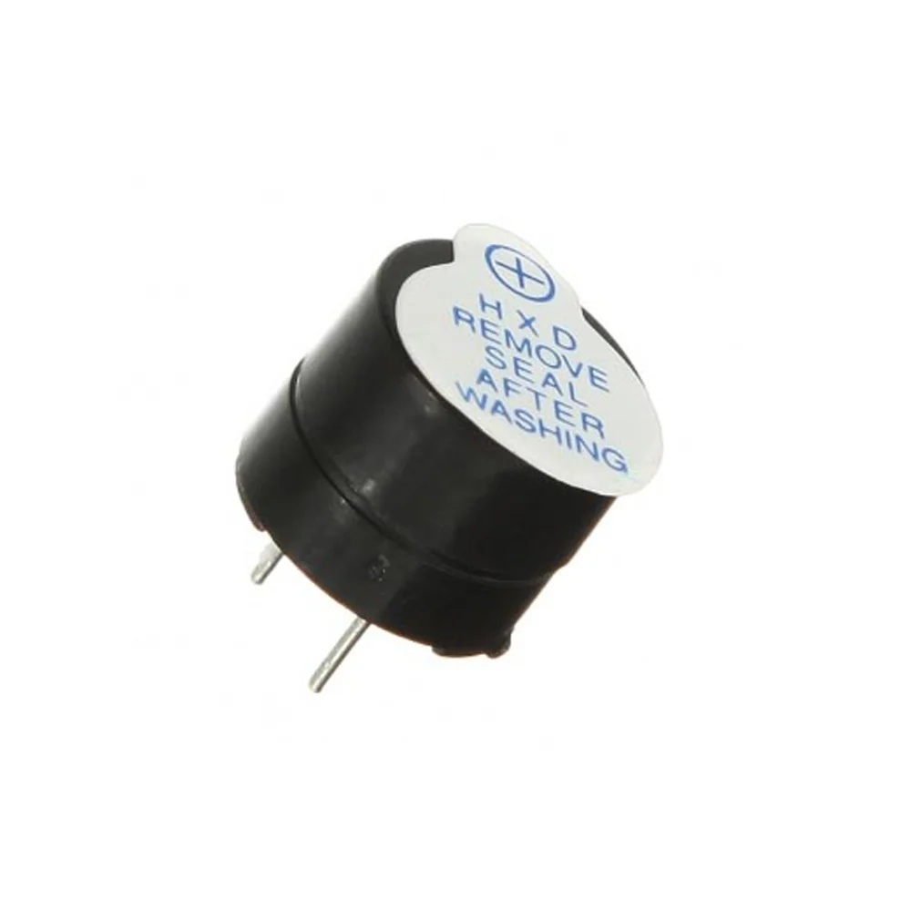
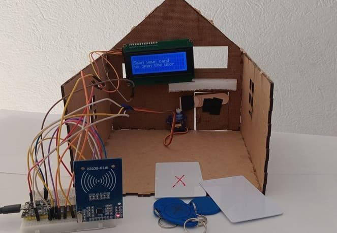

اصنع منزلك الذكي!
اصنع منزلًا صغيرًا يفتح بابه تلقائيًا عند تمرير البطاقة الصحيحة!
تخيّل أنك بنيت منزلًا كرتونيًا لا يفتح إلا لك! في هذه الورشة الهندسية الممتعة، ستتعلم كيف يتعاون عقل أردوينو مع عين قارئ RFID اللاسلكية وعضلة محرك السيرفو لحل مشكلة واقعية بذكاء وأمان.
45 - 60 دقيقة
مدة الورشة العملية
مبتدئ وممتع
لا يشترط خبرة سابقة
تفكير هندسي
إلكترونيات + برمجة + ميكانيكا

كيف يفكر ويعمل الباب الذكي؟
قبل أن نوصل أي سلك، دعنا نتتبع معًا القصة التي تحدث في جزء من الثانية بين البطاقة والأردوينو والمحرك!
تقريب البطاقة
يقرب الطفل بطاقة RFID من القارئ المثبت بجوار باب المنزل.
قراءة المعرف
يقرأ موديول RC522 رقم التعريف اللاسلكي السري للبطاقة (UID).
اتخاذ القرار
يقارن أردوينو الرقم: هل يطابق البطاقة المصرح بها؟ (if / else)
فتح الباب بهدوء (دون إنذار)
إذا كانت البطاقة صحيحة، يفتح الباب تلقائياً لمدة 3 ثوانٍ بهدوء تام دون تشغيل صفارة الإنذار (الجرس صامت تماماً).
صفارة إنذار للبطاقة الخاطئة
إذا كانت البطاقة خاطئة، يطلق جرس الإنذار (Buzzer) صفارة تحذيرية لإخافة الدخيل، ويبقى الباب مغلقاً بإحكام!
Scan your card...
1. اختر بطاقة للتمرير أمام القارئ:
2. أو جرّب بطاقتك الخاصة:
3. مخرجات Arduino Serial Monitor:
مستكشف المكونات الحقيقية
تعرّف على قطع مشروعنا بالصور الحقيقية، واكتشف دور كل قطعة في هذا النظام تحديدًا:

Arduino Uno
المتحكم الدقيق (العقل)لوحة التطوير الرائدة في العالم التعليمي، مزودة بمعالج ATmega328P ومنافذ رقمية وتناظرية لتوصيل المستشعرات والمحركات.

RC522 RFID Reader
العين الإلكترونية اللاسلكيةيعمل بجهد 3.3V فقط، ويتميز بهوائي مطبوع ذكي يستشعر البطاقات المتوافقة عن بُعد يصل إلى بضعة سنتيمترات.

بطاقة وميدالية RFID
RFID Card & Key Fobلا تحتاج البطاقة لبطارية! فهي تستمد طاقتها لاسلكيًا من الموجات الصادرة عن القارئ أثناء تقريبها منه.

محرك سيرفو SG90
عضلة تحريك البابمحرك صغير الحجم وخفيف الوزن يحتوي على تروس ومستشعر موضع داخلي يتيح تحديد الزاوية بدقة متناهية.

لوحة التجارب Breadboard
منصة التوصيل بدون لحامتحتوي بداخلها على شرائح معدنية مرنة تصل النقاط في صفوف وأعمدة مرتبة بعناية لتجربة الدوائر بسرعة وأمان.

أسلاك التوصيل
Jumper Wires (Dupont)نستخدم أسلاكًا ملونة لتمييز خطوط الطاقة والأرضي والإشارات بسهولة وتجنب أخطاء التركيب.

جرس الإنذار (Piezo Buzzer)
صفارة التحذير الأمنية
عنصر كهروبيزوي يحول الإشارات الكهربائية إلى موجات صوتية مسموعة باستخدام دالة tone() و noTone().

كرتون وأعواد خشبية
Cardboard & Craft Sticksمادة متوفرة وصديقة للبيئة تمنح الأطفال حرية الابتكار وقص وتلوين المنزل الذكي بالأسلوب الذي يحبونه.
مصدر طاقة 5V منظم
External 5V Regulated Supplyيمكن تجربة السيرفو أولاً من منفذ 5V في Arduino، ولكن عند تشغيل النظام المتكامل يفضل مصدر طاقة خارجي مع ربط الأرضي (GND) المشترك.
قواعد المهندس الصغير الذهبية
المهندس الذكي هو الذي يحمي نفسه ومكوناته الإلكترونية من التلف قبل البدء بالتجربة!
1. افصل الطاقة قبل تغيير أي سلك
لا تعدل توصيلات الدائرة والـ USB موصول بالحاسوب. التلامس العرضي بين الأسلاك قد يسبب قصرًا كهربائيًا (Short Circuit) يتلف اللوحة.
2. قارئ RC522 يحتاج 3.3V فقط!
إياك وتوصيل منفذ VCC في قارئ RFID بجهد 5V في Arduino؛ فالشريحة مصممة لـ 3.3V فقط والجهد الزائد سيحرقها فورًا دون رجعة.
3. مستويات الجهد المنطقي (Logic Levels)
يعمل RC522 بمنطق 3.3V. من الأفضل حماية مداخل القارئ باستخدام محول مستويات منطقية (Level Shifter) على خطوط إشارات Arduino ذي منطق 5V.
4. أرضي مشترك مع مصدر طاقة السيرفو
إذا استخدمت بطارية أو محولاً خارجياً للسيرفو، يجب حتماً وصل سلك GND الخارجي مع سلك GND في Arduino لتوحيد المرجع الكهربائي.
5. لا تجبر ذراع السيرفو بيدك
محرك SG90 يحتوي على تروس بلاستيكية دقيقة. لا تدور الذراع بالقوة بيديك لأن هذا يكسر الأسنان الداخلية للمحرك.
6. أدوات القص الحادة بإشراف الأستاذ
استخدم المقص والمشرط لقص فتحات الكرتون فقط تحت إشراف الأستاذ خليل، وتأكد من إبعاد أصابعك عن حافة الشفرة دائماً.
مختبر التوصيلات التفاعلي
انقر على أي سلك أو صف في الجدول لإبراز مسار الإشارة ومعرفة وظيفته فورًا:
جدول توصيلات قارئ RFID RC522
| طرف RC522 | منفذ Arduino | السلك والوظيفة |
|---|---|---|
| SDA (SS) | D10 | سلك اختيار الجهاز وبدء التواصل |
| SCK | D13 | نبضات الساعة لضبط سرعة النقل |
| MOSI | D11 | إرسال البيانات من Arduino للقارئ |
| MISO | D12 | استقبال بيانات البطاقة من القارئ |
| RST | D9 | خط إعادة الضبط والتنشيط (Reset) |
| GND | GND | الأرضي المرجعي للدائرة |
| 3.3V | 3.3V | تغذية طاقة آمنة (إياك وتوصيله بـ 5V!) |
| IRQ | دون توصيل | إشارة المقاطعة (غير مستخدم في الورشة) |
جدول توصيلات محرك السيرفو SG90
| سلك السيرفو | التوصيل | الوظيفة |
|---|---|---|
| البرتقالي / الأصفر | D6 | إشارة النبضات (PWM) لتحديد الزاوية |
| الأحمر | 5V (مصدر منظم) | تغذية المحرك بالطاقة الكافية |
| البني / الأسود | GND مشترك | الأرضي المرجعي المشترك مع Arduino |
جدول توصيل جرس الإنذار التنبيهي (Buzzer)
| طرف جرس الإنذار | منفذ Arduino | طريقة التوصيل والوظيفة |
|---|---|---|
| الطرف الموجب (+) للجرس (الساق الطويلة) | D2 | المنفذ الرقمي للتحكم بالصوت tone() عند رفض البطاقة |
| الطرف السالب (-) للجرس (الساق القصيرة) | GND | سكة خط الأرضي المشتركة على لوح التجارب Breadboard |
دليل توصيل جرس الإنذار (Piezo Buzzer) خطوة بخطوة
كيف نربط جرس التنبيه بالمنفذ D2 ليطلق صفارة إنذار عند البطاقة الخاطئة فقط ويبقى صامتًا عند البطاقة الصحيحة؟
معرفة قطبي الجرس (+ و -)
انظر جيدًا لقطبي الجرس الطنان:
• الطرف الموجب (+): الساق الأطول، وتجد علامة + محفورة على جسم الجرس أو مطبوعة على ملصق الحماية العلوي.
• الطرف السالب (-): الساق الأقصر، ويتصل بسكة الأرضي GND.
المنطق الأمني في الورشة
• عند البطاقة الصحيحة: المنفذ D2 يبقى صامتًا تمامًا noTone(BUZZER_PIN) ليفتح الباب بهدوء وسلاسة لمدة 3 ثوانٍ.
• عند البطاقة الخاطئة: يطلق المنفذ D2 نغمة حادة ومفاجئة tone(BUZZER_PIN, 1000) لمدة ثانية ونصف لتنبيه الجميع بوجود محاولة دخول غير مصرح بها!
التوصيل على لوح التجارب
1. اغرس الطرف السالب (-) للجرس في خط الأرضي GND الأزرق المشترك.
2. اغرس الطرف الموجب (+) للجرس في صف مستقل على Breadboard.
3. مد سلك جمبر من نفس الصف إلى المنفذ الرقمي D2 في لوحة أردوينو.
برمجة العقل الذكي
هذا هو الكود المعتمد لدرس الأستاذ خليل بدون أي تعديل أو اختصار. انسخه مباشرة وانقر على أي جزء لفهم دوره الهندسي:
#include <SPI.h>
#include <MFRC522.h>
#include <Servo.h>
#define SS_PIN 10
#define RST_PIN 9
#define SERVO_PIN 6
#define BUZZER_PIN 2
MFRC522 rfid(SS_PIN, RST_PIN);
Servo door;
// رقم البطاقة المسموح لها بالدخول
const String AUTHORIZED_UID = "8310632D";
// زوايا دوران السيرفو (معكوسة لتناسب اتجاه تركيب الباب لديك)
const int CLOSED_ANGLE = 90; // زاوية الإغلاق
const int OPEN_ANGLE = 0; // زاوية الفتح (تم عكس الاتجاه)
void setup() {
Serial.begin(9600);
SPI.begin();
rfid.PCD_Init();
door.attach(SERVO_PIN);
// إعداد منفذ جرس الإنذار
pinMode(BUZZER_PIN, OUTPUT);
noTone(BUZZER_PIN);
// إغلاق الباب عند بدء التشغيل في الزاوية المعكوسة
door.write(CLOSED_ANGLE);
Serial.println("Smart Door System Ready");
Serial.println("Scan your RFID card...");
}
void loop() {
// انتظار بطاقة جديدة
if (!rfid.PICC_IsNewCardPresent()) {
return;
}
// محاولة قراءة البطاقة
if (!rfid.PICC_ReadCardSerial()) {
return;
}
// استخراج رقم تعريف البطاقة
String uid = "";
for (byte i = 0; i < rfid.uid.size; i++) {
if (rfid.uid.uidByte[i] < 0x10) {
uid += "0";
}
uid += String(rfid.uid.uidByte[i], HEX);
}
uid.toUpperCase();
Serial.print("Card UID: ");
Serial.println(uid);
// التحقق من البطاقة
if (uid == AUTHORIZED_UID) {
Serial.println("Access Granted!");
// عند البطاقة الصحيحة: لا يشتغل جرس الإنذار ويفتح الباب
noTone(BUZZER_PIN);
// فتح الباب بالدوران للزاوية المعكوسة
door.write(OPEN_ANGLE);
delay(3000);
// إعادة إغلاق الباب
door.write(CLOSED_ANGLE);
Serial.println("Door Closed");
} else {
Serial.println("Access Denied!");
// إبقاء الباب مغلقًا
door.write(CLOSED_ANGLE);
// عند البطاقة الخاطئة: تشغيل صفارة الإنذار
tone(BUZZER_PIN, 1000);
delay(1500);
noTone(BUZZER_PIN);
}
// إنهاء قراءة البطاقة
rfid.PICC_HaltA();
rfid.PCD_StopCrypto1();
delay(500);
}🔍 انقر على أي مفهوم لفهمه داخل المشروع:
تُنفذ مرة واحدة عند تشغيل الأردوينو لتشغيل شاشة الاتصال والبدء في تهيئة السيرفو وقارئ البطاقات.
حلقة مكررة ليل نهار؛ تفحص باستمرار: هل توجد بطاقة أمام الباب؟ إذا وجدت تبدأ بالقراءة، وإلا تعيد الفحص فورًا.
القيمة التي يجب عليك استبدالها برقم بطاقتك الفعلي المكتشف عبر Serial Monitor (مثال: "31C1BA75").
الشرط المنطقي السحري: هل رقم البطاقة المقروء يطابق البطاقة المسموح بها؟ إذا نعم يفتح الباب، وإلا ينفذ قسم else.
يأمر محرك السيرفو بالدوران بزاوية 90 درجة لدفع ذراع الباب وفتحه أمام الضيف.
يجعل النظام ينتظر 3000 ميلي ثانية (3 ثوانٍ كاملة) ليبقى الباب مفتوحًا حتى يدخل الشخص قبل إغلاقه.
يأمر البطاقة بالتوقف المؤقت حتى لا يقرأها أردوينو مئات المرات متتالية أثناء بقائها أمام القارئ.
الشرح التفصيلي لأسطر البرنامج خطوة بخطوة
دليل تعليمي معمق يوضح كيف يفكر المعالج الصغير وينفذ أوامرك بدقة متناهية بالملي ثانية:
🔹 الجزء 1: استدعاء المكتبات وضبط المنافذ والزوايا (الأسطر 1 - 18)
التجهيز والتعريفات-
#include <SPI.h>: بروتوكول الاتصال التسلسلي عالي السرعة (Serial Peripheral Interface). بدونه لا يستطيع أردوينو تبادل ملايين الإشارات في الثانية مع قارئ RFID. -
#include <MFRC522.h>: المكتبة المسؤولة عن ترجمة أوامر شريحة RC522، مثل طلب رقم البطاقة وفك شفرات التردد اللاسلكي 13.56MHz. -
#include <Servo.h>: مكتبة محرك السيرفو التي تحول الأرقام (كالزاوية 0 أو 90) إلى نبضات كهربائية دقيقة (PWM). -
#define SS_PIN 10وRST_PIN 9: تحديد منافذ التحكم بالقارئ؛ SS لاختيار الشريحة و RST لإعادة تشغيلها. -
#define BUZZER_PIN 2: حجز المنفذ الرقمي D2 لجرس الإنذار، وهو منفذ حر ومستقل تماماً عن مسارات الـ SPI والـ Serial. -
const String AUTHORIZED_UID = "8310632D";: البصمة الرقمية الوحيدة المسموح لها بالدخول. أي بطاقة أخرى ستعتبر دخيلة. -
const int CLOSED_ANGLE = 90;وOPEN_ANGLE = 0;: سر عكس الاتجاه! وضعنا زاويتي الإغلاق والفتح في متغيرين منفصلين ليمكنك عكس حركة الباب فوراً بتغيير الرقمين دون لمس باقي الكود.
🔹 الجزء 2: دالة التأسيس setup() — تهيئة الأجهزة لمرة واحدة (الأسطر 20 - 39)
بدء التشغيل-
Serial.begin(9600);: فتح خط تواصل بين أردوينو وشاشة الحاسوب بسرعة 9600 باود لمراقبة أرقام البطاقات ورسائل النظام. -
SPI.begin();ثمrfid.PCD_Init();: إرسال أمر الاستيقاظ للقارئ وتفعيل ملفات الهوائي المحيطي لبث المجال الكهرومغناطيسي. -
door.attach(SERVO_PIN);: إعلام أردوينو بأن سلك التحكم الخاص بالسيرفو البرتقالي موصول بالمنفذ الرقمي 6. -
pinMode(BUZZER_PIN, OUTPUT);وnoTone(BUZZER_PIN);: ضبط منفذ الجرس كمخرج صوتي والتأكد التام من أنه صامت ولا يصدر أي صوت عند وضع الكهرباء. -
door.write(CLOSED_ANGLE);: إجراء أمني حاسم! إجبار محرك السيرفو على التوجه فوراً لزاوية الإغلاق (90°) ليظل المنزل آمناً ومغلقاً منذ اللحظة الأولى.
🔹 الجزء 3: حراسة الباب واستخراج رقم الـ UID في loop() (الأسطر 41 - 74)
الاستشعار والتحويل-
if (!rfid.PICC_IsNewCardPresent()) return;: الحارس الأول؛ يسأل: هل هناك بطاقة أمام الباب؟ إذا لا، يُنهي الدورة فوراً ويعيد الفحص دون إجهاد المعالج. -
if (!rfid.PICC_ReadCardSerial()) return;: الحارس الثاني؛ يحاول قراءة بيانات البطاقة لاسلكياً. إذا كانت الإشارة ضعيفة أو مشوشة، يتجاهلها ويعاود المحاولة. -
حلقة التحويل السداسي عشري (HEX Loop): رقم البطاقة يتكون من 4 بايتات ثنائية. تمر حلقة
forعليها بايتًا بايتًا وتحولها إلى حروف وأرقام مقروءة. -
حيلة الصفر الذكية (Zero Padding):
if (rfid.uid.uidByte[i] < 0x10) uid += "0";
إذا كان البايت أصغر من 16 (مثل0x0A)، يقوم الأردوينو افتراضياً بحذف الصفر ويقرؤهAفيفشل التطابق! هذا السطر يضيف الصفر يدوياً ليضمن أن معرّف البطاقة يتكون دائماً من 8 خانات كاملة دون أخطاء.
🔹 الجزء 4: صانع القرار if / else — فتح الباب أو إطلاق الإنذار (الأسطر 76 - 110)
المنطق الأمني
✅ عند تطابق البطاقة: if (uid == AUTHORIZED_UID)
noTone(BUZZER_PIN);: التأكيد على أن جرس الإنذار صامت تماماً لعدم إزعاج صاحب المنزل.door.write(OPEN_ANGLE);: أمر محرك السيرفو بالدوران إلى زاوية الفتح (0°) لدفع الباب.delay(3000);: منح الضيف مهلة 3 ثوانٍ كاملة للدخول براحة قبل الإغلاق.door.write(CLOSED_ANGLE);: إعادة الباب إلى زاوية الإغلاق (90°).
⛔ عند عدم تطابق البطاقة: else
door.write(CLOSED_ANGLE);: التأكيد القاطع على إبقاء الباب مغلقاً لمنع أي اختراق.tone(BUZZER_PIN, 1000);: إطلاق نغمة إنذار حادة بتردد 1000 هرتز لإخافة الدخيل.delay(1500);: استمرار صفارة الإنذار لمدة ثانية ونصف.noTone(BUZZER_PIN);: إيقاف الصوت بعد انتهاء مهلة التحذير.
🔹 الجزء 5: إنهاء المعاملة وإراحة المعالج (الأسطر 112 - 118)
الاستقرار والأمان-
rfid.PICC_HaltA();: أمر تجميد مؤقت للبطاقة الحالية. إذا ظل الطفل ممسكاً بالبطاقة أمام القارئ، يمنع هذا الأمر أردوينو من قراءتها 50 مرة في الثانية وإعادة فتح الباب فوراً! -
rfid.PCD_StopCrypto1();: إغلاق جلسة التشفير وتنظيف سجلات ذاكرة القارئ لاستقبال بطاقة جديدة. -
delay(500);: فترة أمان زمنية (نصف ثانية) لتفادي ارتداد الإشارات واستقرار النظام قبل بدء حلقة الفحص التالية.
⚡ قاموس الدوال البرمجية في المشروع (مرجع سريع للمهندس الصغير)
door.write(angle)
تدوير السيرفو لزاوية محددة بين 0 و 180 درجة.
tone(pin, freq)
توليد نغمة صوتية بتردد معين (مثل 1000Hz للإنذار).
noTone(pin)
كتم صوت الجرس فوراً وإيقاف التردد.
delay(ms)
تجميد الوقت بالميلي ثانية (1000ms = ثانية واحدة).
كيف تكتشف رقم بطاقتك (UID)؟
كل بطاقة لها رقم بصمة خاص بها. اتبع هذه الخطوات السبع البسيطة لقراءته وإدخاله في الكود:
ارفع الكود إلى Arduino
انسخ الكود في برنامج Arduino IDE واضغط زر الرفع (Upload ➔) بالرمز السهمي.
افتح شاشة Serial Monitor
من قائمة Tools اختر Serial Monitor، أو اضغط على أيقونة العدسة في أعلى اليمين.
اضبط السرعة على 9600 Baud
تأكد أن القائمة السفلية في الشاشة مضبوطة على 9600 baud لتظهر الكلمات واضحة.
قرّب بطاقتك من القارئ
مرر البطاقة أمام حساس RC522؛ ستلاحظ ظهور سطر جديد فوراً في الشاشة!
انسخ رقم UID المعروض
ستشاهد سطراً مثل Card UID: 8310632D. انسخ هذا الرقم المكون من أرقام وحروف.
استبدل REPLACE_ME في الكود
ضع رقمك مكان العبارة مع الحفاظ على علامتي التنصيص: const String AUTHORIZED_UID = "8310632D";
أعد رفع الكود واستمتع!
اضغط زر الرفع مرة أخرى؛ والآن أصبح منزلك يتعرف على بطاقتك فقط!
جدول اختبار ومصادقة الباب الذكي
نفّذ هذه الاختبارات الخمسة المنهجية مع أستاذك وضع علامة (✓) بعد نجاح كل اختبار:
مختبر حل المشكلات والأعطال
المهندس الحقيقي لا ييأس ولا يستبدل القطع عشوائيًا! اتبع المنهجية العلمية: افهم المشكلة ➔ افحص السبب ➔ اختبر الفرضية ➔ تأكد من النتيجة
- تأكد أن سلك 3.3V موصول بمنفذ 3.3V في Arduino وليس 5V.
- راجع أسلاك SPI الستة بدقة: D10(SDA), D13(SCK), D11(MOSI), D12(MISO), D9(RST).
- تأكد من تثبيت مكتبة
MFRC522من مدير المكتبات في Arduino IDE.
- تأكد من تطابق رقم UID في متغير
AUTHORIZED_UIDحرفًا بحرف. - تأكد من وجود علامات التنصيص المزدوجة
"..."حول الرقم. - تأكد من أن الحروف الإنجليزية كبيرة (Uppercase) مثل A1B2 بدلاً من a1b2.
- افحص أمر
delay(3000);وأمرdoor.write(CLOSED_ANGLE);بعده. - تأكد من استقرار أسلاك التغذية والأرضي المتصلة بالسيرفو.
- تأكد أن ذراع السيرفو لم تعلق ميكانيكياً في حافة جدار الكرتون.
- السيرفو يسحب تياراً أعلى مما يوفره منفذ USB، مما يسبب هبوط الجهد.
- استخدم مصدر 5V خارجي منظم للسيرفو.
- مهم جداً: تأكد من ربط أرضي المصدر الخارجي (GND) مع أرضي Arduino.
- عكس الاتجاه يعني أن زاوية البداية تحتاج تعديلاً.
- بدّل القيمتين في الكود: اجعل
CLOSED_ANGLE = 90;وOPEN_ANGLE = 0; - أو فك ذراع السيرفو البلاستيكي وثبته في الزاوية المقابلة يدويًا.
- افحص الأسلاك؛ غالباً ما ينفصل سلك بسبب الشد عند إدخال المكونات للمنزل.
- تأكد من أن الكرتون لا يضغط على ذراع السيرفو بحرية دورانه.
- تأكد أن القارئ ليس مغطى بطبقات كرتون سميكة تعزل الإشارة.
تحديات المهندسين والمبتكرين
بعد أن نجح مشروعك الأساسي، هل أنت مستعد لترقية منزلك إلى مستوى المحترفين؟ اختر تحديك القادم:
مهندس مبتدئ
تشغيل النظام الأساسي: جعل الباب يفتح تلقائيًا للبطاقة المصرح بها، ويغلق بعد 3 ثوانٍ، ويرفض البطاقات الغريبة.
مطوّر برمجيات
تعديل الكود لجعل مدة بقاء الباب مفتوحًا 5 ثوانٍ بدلاً من 3 ثوانٍ، أو إضافة بطاقة ثانية مصرح بها (مثلاً لأخيك الصغير!).
مهندس إلكترونيات
إضافة LED أخضر يضيء عند قبول الدخول، وLED أحمر يضيء عند رفض البطاقة، لحماية بصرية واضحة للمنزل.
مبتكر ذكي
إضافة جرس Buzzer يصدر نغمة ترحيب مبهجة عند القبول وصفارة تحذير عند الرفض، أو ربط شاشة LCD لعرض اسم صاحب البطاقة!
مسابقة المهندس الذكي السريعة
أجب عن الأسئلة الخمسة للتأكد من فهمك العميق لمنطق النظام قبل الانتقال للحصة القادمة:
نصائح وتوجيهات الأستاذ خليل
كلمات من القلب لكل مهندس ومخترع صغير في ورشتنا
💡 نصائح ذهبية أثناء التجربة:
- افهم الفكرة قبل أن تحفظ الكود.
- اختبر كل جزء بمفرده على الطاولة قبل دمجه مع بقية المكونات داخل المنزل.
- عندما يحدث خطأ، ابحث عن السبب بنظام بدل تغيير جميع المكونات دفعة واحدة.
- لا تحفظ الكود فقط؛ بل افهم الوظيفة التي يؤديها كل سطر برمجي.
- اختبر دائمًا البطاقة المقبولة والبطاقة المرفوضة للتأكد من أمان النظام.
🚀 نصائح في رحلتك نحو الابتكار:
- كن فضوليًا واسأل دائمًا: كيف يعمل هذا الشيء؟ ولماذا صُمم هكذا؟
- لا تخف إطلاقًا من الخطأ؛ فكل محاولة فاشلة هي خطوة تقربك من الحل الحقيقي.
- فكّر بنفسك أولًا، ثم استخدم الأدوات والمراجع التي تساعدك على الوصول للهدف.
- لا تقارن نفسك بالآخرين؛ ركز دائمًا على أن تصبح اليوم أفضل مما كنت عليه بالأمس!
«أنا لا أريد منك أن تتعلم البرمجة فقط، بل أن تصبح قادرًا على التفكير، وحل المشكلات، وتحويل أفكارك إلى اختراعات حقيقية. ربما يكون اختراعك القادم هو الذي لم يفكر فيه أحد من قبلك!»
مبروك! لقد بنيت بابًا ذكيًا!
لقد أكملت ورشة المنزل الذكي بنجاح باهر؛ وفهمت كيف تتكامل الدوائر والبرمجة والميكانيكا. اكتب اسمك الآن لاستلام وطباعة شهادة التميز الخاصة بك!
✍️ أدخل اسم الطالب لإصدار شهادة إتمام الورشة:
شهادة تميز في الابتكار والتطوير الإلكتروني
تشهد ورشة الأستاذ خليل لتعليم الإلكترونيات والبرمجة بأن المهندس(ة) المبدع(ة):
قد أتم بنجاح واقتدار تصميم وبرمجة وبناء مشروع «المنزل الذكي: الباب الأوتوماتيكي بتقنية RFID ومحرك السيرفو مع أردوينو» وأظهر تفوقاً ملحوظاً في التفكير المنطقي والعمل الهندسي وحل المشكلات.
الأستاذ خليل
مدرّب الأردوينو والإلكترونيات
تاريخ الإنجاز
29 أكتوبر 2026
لعبة سلك الإنذار والتركيز مع الجرس ⚡
راجع الدائرة الكهربائية ومفهوم INPUT_PULLUP وكود حساب لمسات الخطأ ونغمات tone().